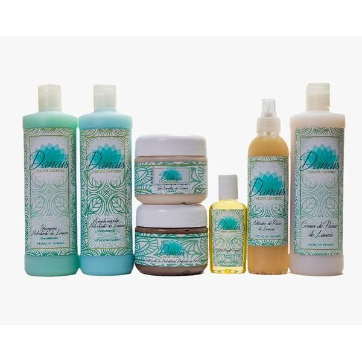
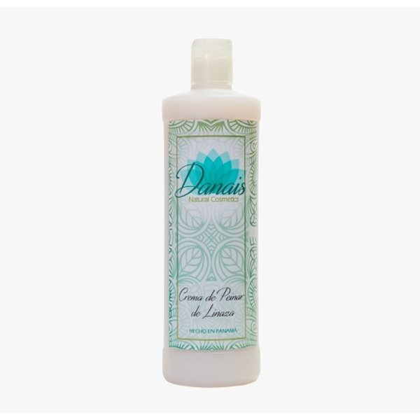

Tu Fórmula Botánica Hecha a Medida
Descubre de forma precisa qué ingredientes botánicos, rutina, cantidad de productos y métodos de estilizado potenciarán la naturaleza de tu cabello.
Paso 1 de 6
16% Completado
1. ¿Cuál es el patrón o estructura de tu cabello?
Selecciona la clasificación que mejor se asemeje a tu textura natural.
Tu Diagnóstico de Precisión
Recomendación: Cargando...
Explicación de las características de tu melena...

Método de Estilizado Recomendado
Técnica recomendada
Pasos a seguir para aplicar tu producto de peinado...
Tu Kit y Productos Recomendados
¿Encargamos tu rutina personalizada?
Como creamos cosméticos artesanales y personalizados, podemos afinar los ingredientes antes de preparar tu pedido. Haz una captura de pantalla de este diagnóstico y envíanosla por WhatsApp.